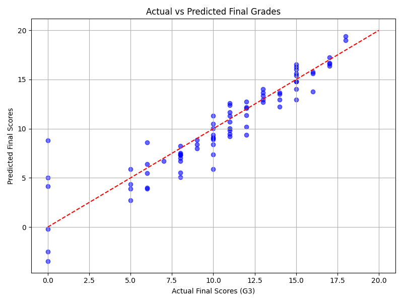

📘 Student Exam Score Prediction
This project uses regression models to predict final student scores based on:
- 📚 Study time
- 📝 Previous grades (G1, G2)
- 📅 Attendance (absences)
📊 Model Performance
- R² Score: 0.837
- Mean Squared Error: 3.29
📈 Prediction Accuracy Plot
Below is a plot comparing actual vs predicted exam scores:

📁 Dataset Source
Data from: Kaggle - Student Performance Dataset